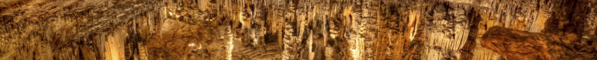

Cave popcorn, or coralloids, are small nodes of calcite, aragonite, or gypsum that form on surfaces in caves,
especially limestone caves. They are a common type of speleothem.
Flowstones are sheetlike deposits of calcite or other carbonate
minerals, formed where water flows down the walls or along the
floors of a cave. They are typically found in "solution caves", in limestone.A helictite is a speleothem (cave-formed mineral) found in a limestone cave that changes its
axis from the vertical at one or more stages during its growth.